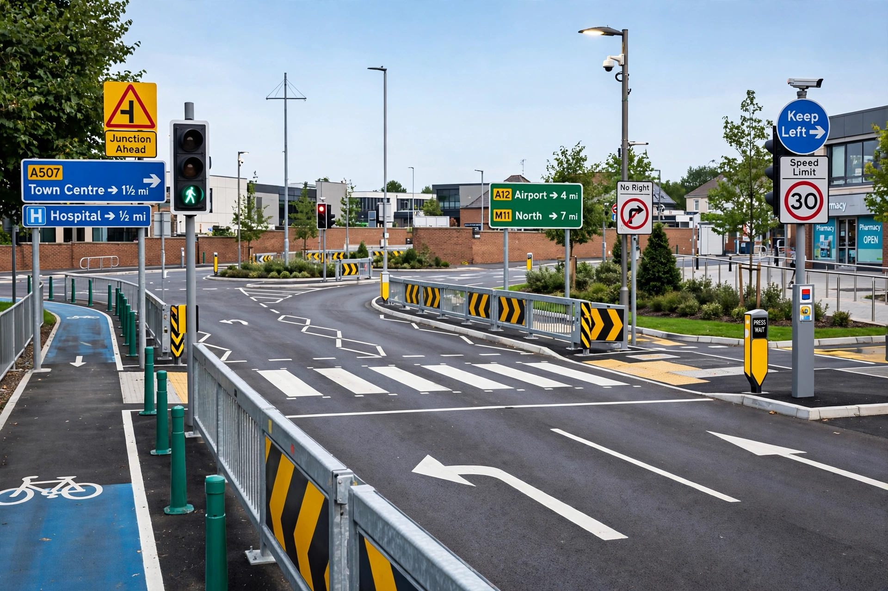

Road safety

Road safety refers to the methods and measures used to prevent road users from being killed or seriously injured. Typical road users include pedestrians, cyclists, motorists, vehicle passengers and passengers of on-road public transport. According to the World Health Organization, about 1.19 million people die each year in road traffic crashes, and between 20 and 50 million more suffer non-fatal injuries; road traffic injuries are the leading cause of death for children and young adults aged 5–29.
1 History
2 Risk factors
3 Interventions
4 Safe System and Vision Zero
5 Statistics
History
Road safety became a policy concern with mass motorisation in the 20th century. Milestones include the introduction of seat belt laws, drink-driving limits, crash testing programmes such as Euro NCAP, and the widespread adoption of airbags and electronic stability control.
Risk factors
Major behavioural risk factors include speeding, driving under the influence of alcohol or drugs, distracted driving (including mobile phone use), failure to wear seat belts or motorcycle helmets, and fatigue. Vehicle and infrastructure factors — poor road design, inadequate pedestrian facilities, unsafe vehicles — also contribute, especially in low- and middle-income countries, where over 90 per cent of deaths occur despite having around 60 per cent of the world's vehicles.
Interventions
Effective measures combine engineering (safer road design, traffic calming, separated cycling infrastructure), enforcement (speed cameras, breath testing), education, vehicle standards, and post-crash care. The Haddon Matrix is a classic framework organising countermeasures by phase (pre-crash, crash, post-crash) and factor (human, vehicle, environment).
Safe System and Vision Zero
The Safe System approach, pioneered in Sweden (Vision Zero, adopted 1997) and the Netherlands (Sustainable Safety), accepts that humans make mistakes and aims to design the road system so that crashes do not result in death or serious injury, for example by separating traffic streams and reducing speeds where people walk and cycle.
Statistics
Global deaths have plateaued at roughly 1.2 million per year even as vehicle numbers grow. The UN Decade of Action for Road Safety 2021–2030 targets halving deaths and injuries by 2030.